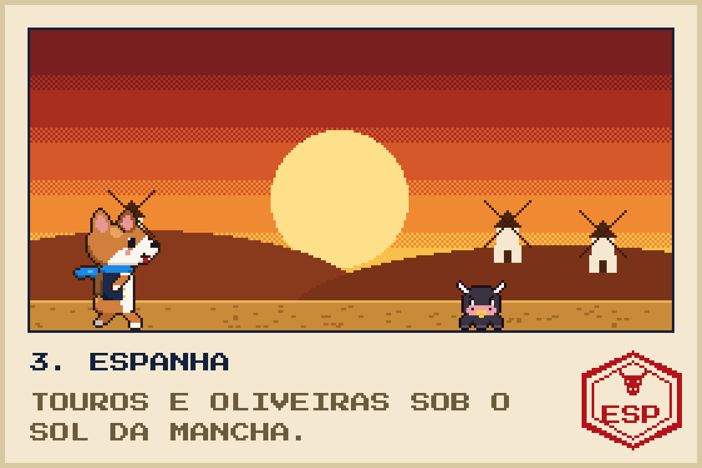

Fernando Mateus Santos
Projeto Individual · Pesquisa e Inovação · SPTech · 2026.2

Embarque autorizado
Bom dia, banca!
Professores [ nomes da banca ], obrigado por estarem aqui.
Eu sou o Fernando Mateus Santos e hoje vou mostrar o meu passaporte.
[ quem eu sou em uma frase: o que faço, de onde venho, o que gosto ]

Minha linha da vida
-
[ ano ]

Avião para Maceió
-
2016–17

Atacama, Chile
-
2023–24

Mendoza, Argentina
-
2024


Espanha, Portugal e Gibraltar
-
2024

Maputo e Ponta do Ouro, Moçambique
-
2026

Orlando, EUA
-
2026

Nasce o Passport
[ quando o interesse por viagens despertou e o que aconteceu nesse momento ]
O que é o Passport

Home pública
Quem sou e os 7 destinos, sem login.

Cadastro e login
Nome, e-mail e senha validados em JS.
Dashboard
Gráfico do custo por destino e tipo de viagem.

Calculadora
Custo em reais e na moeda local.
Jogo
7 fases: cada vitória dá um carimbo.
Skins e Sobre mim
Cada carimbo libera as cores do país.
Pule, voe, carimbe

- Corrida no estilo do dinossauro do Chrome: só pular.
- 7 fases, uma por país, com fundo e obstáculos do lugar.
- Vencer a fase dá um carimbo, salvo na tabela carimbo.
- Cada carimbo libera a skin daquele país no site.

Obrigado! Perguntas?
github.com/FerKaGe/Passport